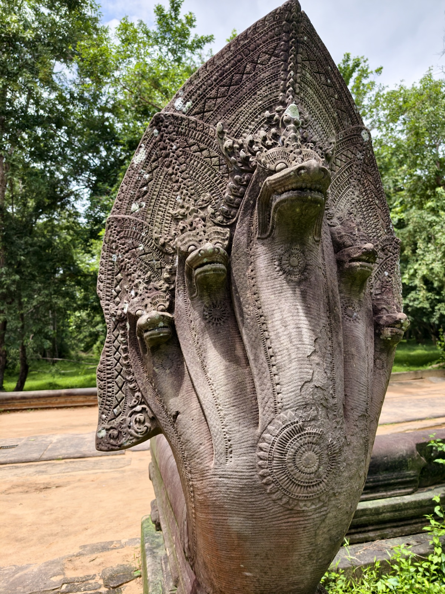
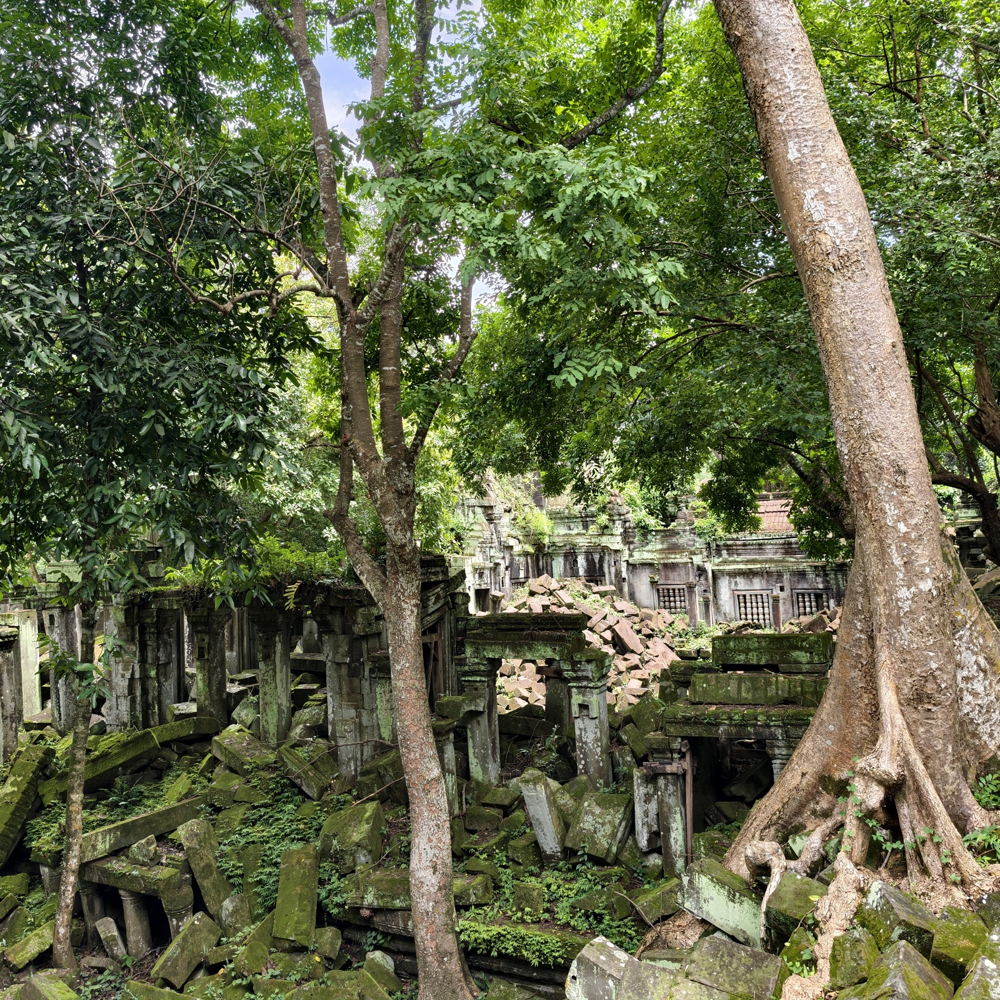
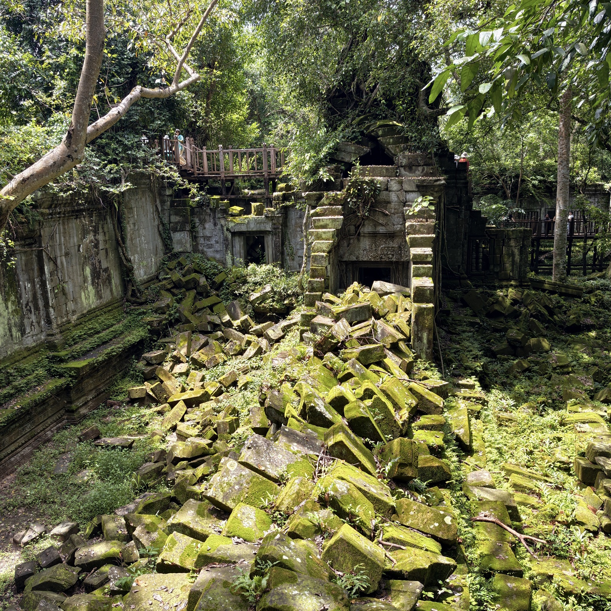
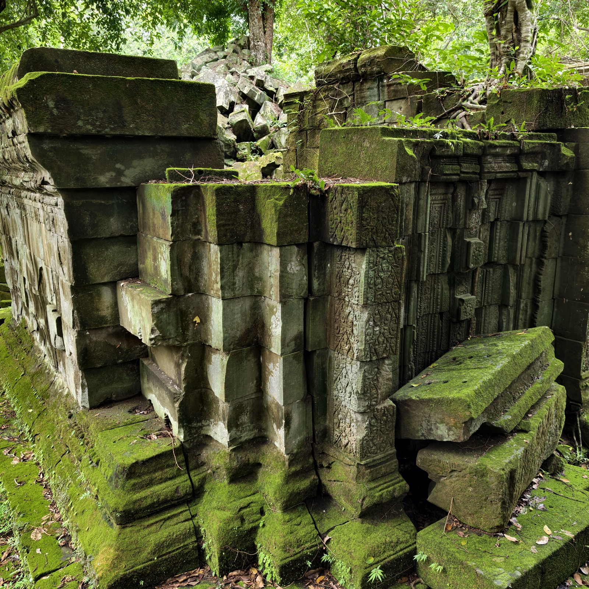
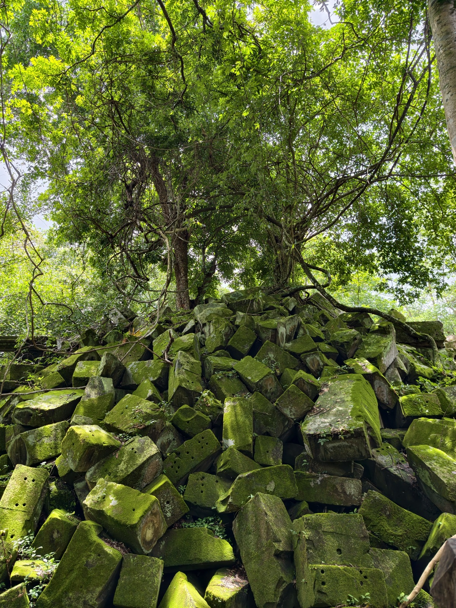
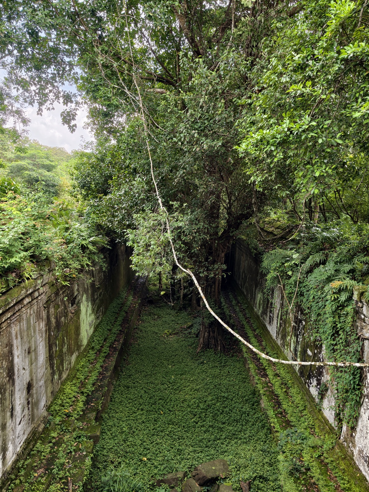
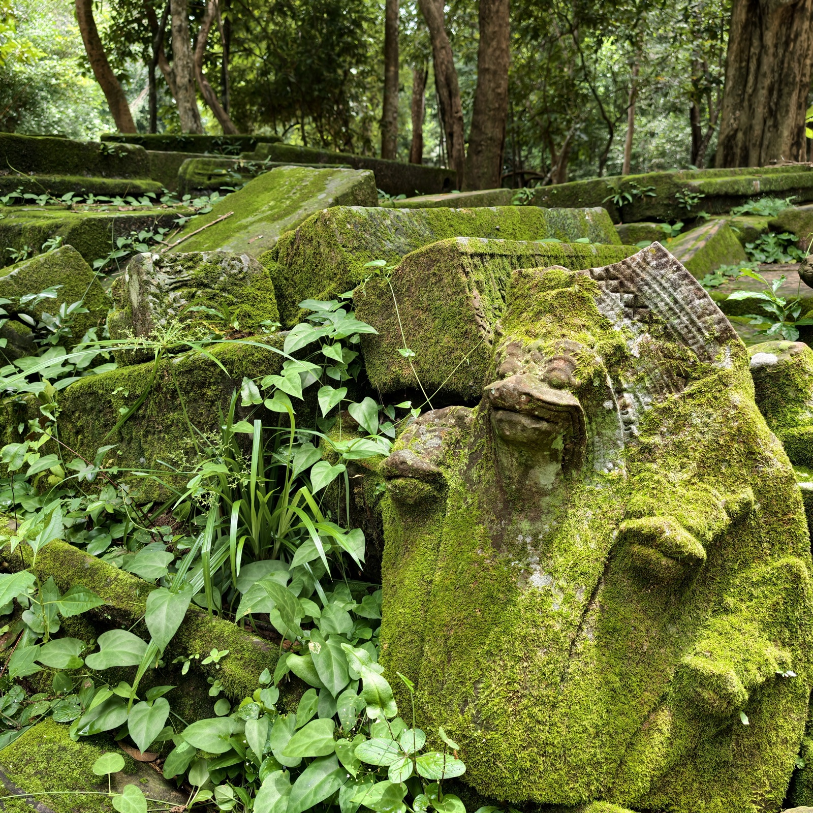

崩密列
崩密列在女王宫以东，车程约一小时，离暹粒七十公里开外。它建于十二世纪初，与吴哥寺同一时代，平面格局也近乎同一套；坐落在通往贡开的古御道旁，名字的意思是「莲花池」。
这座庙几乎从未被修复过。几百年来，树根、雨水和苔藓把它一点一点拆开，石头成堆地塌在庭院里，直到今天。近代的战争给它添的是另一笔账：周边一带曾是雷区，直到二〇〇三年地雷才被清除干净；之后铺上木栈道，游人才得以走进废墟深处。

进了门，满目郁郁葱葱，气场干净。这里像塔普伦寺，又不全像：塔普伦寺是树抱着庙，这里是树把庙拆成了废墟——残缺破败本身就是主角。陈老师说，这里的树看着空心，其实很结实，和塔普伦寺那些不一样。





